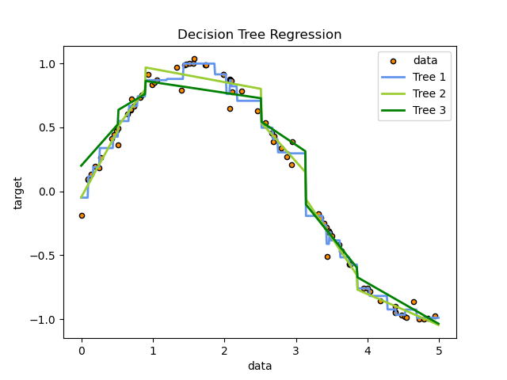

Note
Click here to download the full example code
Simple 1D example¶
A 1D regression with M5P decision tree.
The tree is used to fit a sine curve with addition noisy observation. As a result, it learns local linear regressions approximating the sine curve.
We can see the role of pruning (Tree 2) and pruning + smoothing (Tree 3).
Import the necessary modules and libraries
import numpy as np
import matplotlib.pyplot as plt
from m5py import M5Prime, export_text_m5
Create a random dataset
rng = np.random.RandomState(1)
X = np.sort(5 * rng.rand(80, 1), axis=0)
y = np.sin(X).ravel()
y[::5] += 0.5 * (0.5 - rng.rand(16))
Fit regression model
regr_1 = M5Prime(use_smoothing=False, use_pruning=False)
regr_1_label = "Tree 1"
regr_1.fit(X, y)
regr_2 = M5Prime(use_smoothing=False)
regr_2_label = "Tree 2"
regr_2.fit(X, y)
regr_3 = M5Prime(smoothing_constant=5)
regr_3_label = "Tree 3"
regr_3.fit(X, y)
Predict
X_test = np.arange(0.0, 5.0, 0.01)[:, np.newaxis]
y_1 = regr_1.predict(X_test)
y_2 = regr_2.predict(X_test)
y_3 = regr_3.predict(X_test)
Print the trees
print("\n----- %s" % regr_1_label)
print(regr_1.as_pretty_text())
Out:
----- Tree 1
M5Prime (unsmoothed - but this can be done at prediction time):
X[0] <= 3.133 [friedman_mse=0.467, samples=80] (err=0.05, params=2)
| X[0] <= 0.514 [friedman_mse=0.09, samples=51] (err=0.055, params=2)
| | X[0] <= 0.258 [friedman_mse=0.035, samples=11] (err=0.073, params=2)
| | | X[0] <= 0.094 [friedman_mse=0.017, samples=6] (err=0.082, params=2)
| | | | LEAF [friedman_mse=0.02, samples=2] : -0.05 (err=0.141, params=1)
| | | | X[0] <= 0.166 [friedman_mse=0.002, samples=4] (err=0.014, params=2)
| | | | | LEAF [friedman_mse=0.0, samples=2] : 0.117 (err=0.02, params=1)
| | | | | LEAF [friedman_mse=0.0, samples=2] : 0.19 (err=0.004, params=1)
| | | X[0] <= 0.443 [friedman_mse=0.005, samples=5] (err=0.059, params=2)
| | | | LEAF [friedman_mse=0.006, samples=2] : 0.338 (err=0.074, params=1)
| | | | LEAF [friedman_mse=0.002, samples=3] : 0.427 (err=0.046, params=1)
| | X[0] <= 2.516 [friedman_mse=0.05, samples=40] (err=0.05, params=2)
| | | X[0] <= 0.89 [friedman_mse=0.02, samples=32] (err=0.049, params=2)
| | | | X[0] <= 0.669 [friedman_mse=0.006, samples=9] (err=0.035, params=2)
| | | | | LEAF [friedman_mse=0.003, samples=2] : 0.549 (err=0.056, params=1)
| | | | | X[0] <= 0.78 [friedman_mse=0.002, samples=7] (err=0.026, params=2)
| | | | | | LEAF [friedman_mse=0.001, samples=5] : 0.667 (err=0.031, params=1)
| | | | | | LEAF [friedman_mse=0.0, samples=2] : 0.743 (err=0.007, params=1)
| | | | X[0] <= 2.029 [friedman_mse=0.011, samples=23] (err=0.053, params=2)
| | | | | X[0] <= 1.421 [friedman_mse=0.005, samples=15] (err=0.038, params=2)
| | | | | | X[0] <= 1.193 [friedman_mse=0.003, samples=6] (err=0.058, params=2)
| | | | | | | LEAF [friedman_mse=0.001, samples=4] : 0.87 (err=0.03, params=1)
| | | | | | | LEAF [friedman_mse=0.008, samples=2] : 0.879 (err=0.091, params=1)
| | | | | | X[0] <= 1.861 [friedman_mse=0.001, samples=9] (err=0.014, params=2)
| | | | | | | LEAF [friedman_mse=0.0, samples=7] : 0.999 (err=0.016, params=1)
| | | | | | | LEAF [friedman_mse=0.0, samples=2] : 0.915 (err=0.001, params=1)
| | | | | X[0] <= 2.173 [friedman_mse=0.009, samples=8] (err=0.073, params=2)
| | | | | | X[0] <= 2.078 [friedman_mse=0.007, samples=6] (err=0.072, params=2)
| | | | | | | LEAF [friedman_mse=0.013, samples=2] : 0.761 (err=0.116, params=1)
| | | | | | | X[0] <= 2.091 [friedman_mse=0.002, samples=4] (err=0.031, params=2)
| | | | | | | | LEAF [friedman_mse=0.0, samples=2] : 0.87 (err=0.0, params=1)
| | | | | | | | LEAF [friedman_mse=0.002, samples=2] : 0.822 (err=0.043, params=1)
| | | | | | LEAF [friedman_mse=0.006, samples=2] : 0.708 (err=0.076, params=1)
| | | X[0] <= 2.744 [friedman_mse=0.01, samples=8] (err=0.054, params=2)
| | | | X[0] <= 2.673 [friedman_mse=0.003, samples=4] (err=0.033, params=2)
| | | | | LEAF [friedman_mse=0.002, samples=2] : 0.498 (err=0.04, params=1)
| | | | | LEAF [friedman_mse=0.001, samples=2] : 0.409 (err=0.024, params=1)
| | | | X[0] <= 2.902 [friedman_mse=0.005, samples=4] (err=0.068, params=2)
| | | | | LEAF [friedman_mse=0.001, samples=2] : 0.304 (err=0.037, params=1)
| | | | | LEAF [friedman_mse=0.008, samples=2] : 0.297 (err=0.09, params=1)
| X[0] <= 3.85 [friedman_mse=0.084, samples=29] (err=0.037, params=2)
| | X[0] <= 3.616 [friedman_mse=0.018, samples=14] (err=0.045, params=2)
| | | X[0] <= 3.429 [friedman_mse=0.009, samples=10] (err=0.048, params=2)
| | | | X[0] <= 3.373 [friedman_mse=0.002, samples=4] (err=0.016, params=2)
| | | | | LEAF [friedman_mse=0.0, samples=2] : -0.193 (err=0.016, params=1)
| | | | | LEAF [friedman_mse=0.0, samples=2] : -0.265 (err=0.015, params=1)
| | | | X[0] <= 3.46 [friedman_mse=0.005, samples=6] (err=0.061, params=2)
| | | | | LEAF [friedman_mse=0.01, samples=2] : -0.412 (err=0.1, params=1)
| | | | | X[0] <= 3.485 [friedman_mse=0.002, samples=4] (err=0.025, params=2)
| | | | | | LEAF [friedman_mse=0.0, samples=2] : -0.32 (err=0.005, params=1)
| | | | | | LEAF [friedman_mse=0.001, samples=2] : -0.384 (err=0.035, params=1)
| | | X[0] <= 3.746 [friedman_mse=0.002, samples=4] (err=0.034, params=2)
| | | | LEAF [friedman_mse=0.002, samples=2] : -0.517 (err=0.047, params=1)
| | | | LEAF [friedman_mse=0.0, samples=2] : -0.574 (err=0.001, params=1)
| | X[0] <= 4.278 [friedman_mse=0.007, samples=15] (err=0.028, params=2)
| | | X[0] <= 4.02 [friedman_mse=0.002, samples=4] (err=0.027, params=2)
| | | | LEAF [friedman_mse=0.0, samples=2] : -0.76 (err=0.0, params=1)
| | | | LEAF [friedman_mse=0.002, samples=2] : -0.819 (err=0.039, params=1)
| | | X[0] <= 4.68 [friedman_mse=0.002, samples=11] (err=0.029, params=2)
| | | | X[0] <= 4.391 [friedman_mse=0.002, samples=7] (err=0.035, params=2)
| | | | | LEAF [friedman_mse=0.0, samples=2] : -0.924 (err=0.022, params=1)
| | | | | X[0] <= 4.53 [friedman_mse=0.002, samples=5] (err=0.039, params=2)
| | | | | | LEAF [friedman_mse=0.0, samples=3] : -0.967 (err=0.014, params=1)
| | | | | | LEAF [friedman_mse=0.004, samples=2] : -0.926 (err=0.06, params=1)
| | | | LEAF [friedman_mse=0.0, samples=4] : -0.99 (err=0.01, params=1)
print("\n----- %s" % regr_2_label)
print(regr_2.as_pretty_text())
Out:
----- Tree 2
M5Prime (unsmoothed - but this can be done at prediction time):
X[0] <= 3.133 [friedman_mse=0.467, samples=80] (err=0.068, params=2)
| X[0] <= 0.514 [friedman_mse=0.09, samples=51] (err=0.075, params=2)
| | LEAF [friedman_mse=0.035, samples=11] : LM1 (err=0.063, params=2)
| | X[0] <= 2.516 [friedman_mse=0.05, samples=40] (err=0.078, params=2)
| | | X[0] <= 0.89 [friedman_mse=0.02, samples=32] (err=0.083, params=2)
| | | | LEAF [friedman_mse=0.006, samples=9] : LM2 (err=0.025, params=2)
| | | | LEAF [friedman_mse=0.011, samples=23] : LM3 (err=0.096, params=2)
| | | LEAF [friedman_mse=0.01, samples=8] : LM4 (err=0.057, params=2)
| X[0] <= 3.85 [friedman_mse=0.084, samples=29] (err=0.052, params=2)
| | LEAF [friedman_mse=0.018, samples=14] : LM5 (err=0.058, params=2)
| | LEAF [friedman_mse=0.007, samples=15] : LM6 (err=0.045, params=2)
LM1: 1.019 * X[0] - 4.672e-02
LM2: 7.603e-01 * X[0] + 1.177e-01
LM3: -1.038e-01 * X[0] + 1.062
LM4: -6.281e-01 * X[0] + 2.117
LM5: -8.335e-01 * X[0] + 2.554
LM6: -2.438e-01 * X[0] + 1.707e-01
print("\n----- %s" % regr_3_label)
print(export_text_m5(regr_3, out_file=None)) # equivalent to as_pretty_text
Out:
----- Tree 3
M5Prime (pre-smoothed with constant 5):
X[0] <= 3.133 [friedman_mse=0.467, samples=80] (err=0.11, params=17)
| X[0] <= 0.514 [friedman_mse=0.09, samples=51] (err=0.128, params=11)
| | LEAF [friedman_mse=0.035, samples=11] : LM1 (err=0.171, params=2)
| | X[0] <= 2.516 [friedman_mse=0.05, samples=40] (err=0.113, params=8)
| | | X[0] <= 0.89 [friedman_mse=0.02, samples=32] (err=0.117, params=5)
| | | | LEAF [friedman_mse=0.006, samples=9] : LM2 (err=0.063, params=2)
| | | | LEAF [friedman_mse=0.011, samples=23] : LM3 (err=0.132, params=2)
| | | LEAF [friedman_mse=0.01, samples=8] : LM4 (err=0.097, params=2)
| X[0] <= 3.85 [friedman_mse=0.084, samples=29] (err=0.067, params=5)
| | LEAF [friedman_mse=0.018, samples=14] : LM5 (err=0.062, params=2)
| | LEAF [friedman_mse=0.007, samples=15] : LM6 (err=0.072, params=2)
LM1: 6.325e-01 * X[0] + 2.006e-01
LM2: 3.306e-01 * X[0] + 4.657e-01
LM3: -8.379e-02 * X[0] + 9.385e-01
LM4: -3.753e-01 * X[0] + 1.489
LM5: -6.945e-01 * X[0] + 2.077
LM6: -3.207e-01 * X[0] + 5.643e-01
Plot the results
fig = plt.figure()
plt.scatter(X, y, s=20, edgecolor="black",
c="darkorange", label="data")
plt.plot(X_test, y_1, color="cornflowerblue", label=regr_1_label, linewidth=2)
plt.plot(X_test, y_2, color="yellowgreen", label=regr_2_label, linewidth=2)
plt.plot(X_test, y_3, color="green", label=regr_3_label, linewidth=2)
plt.xlabel("data")
plt.ylabel("target")
plt.title("Decision Tree Regression")
plt.legend()
fig

Out:
<Figure size 640x480 with 1 Axes>
Total running time of the script: ( 0 minutes 0.589 seconds)
Download Python source code: 1_simple_1D_demo.py